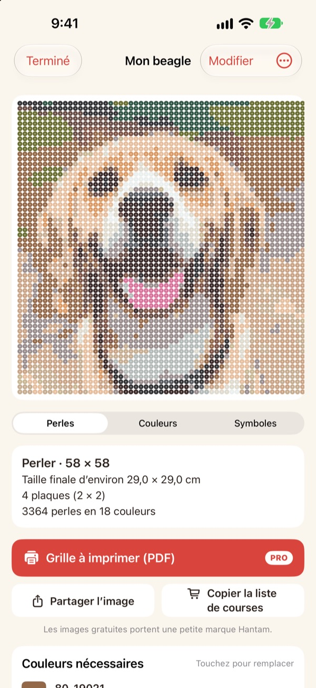
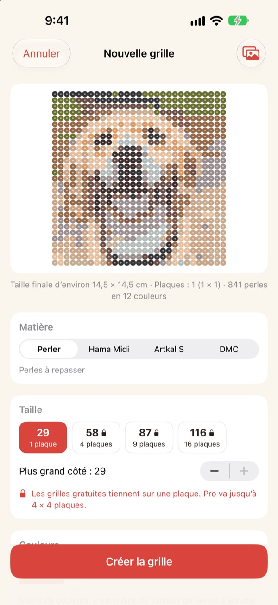
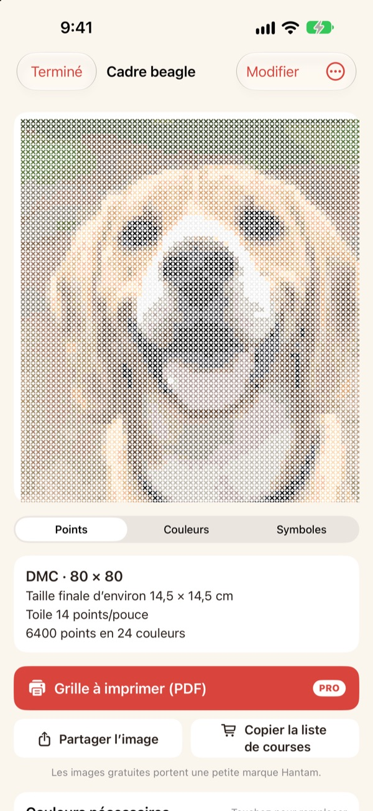
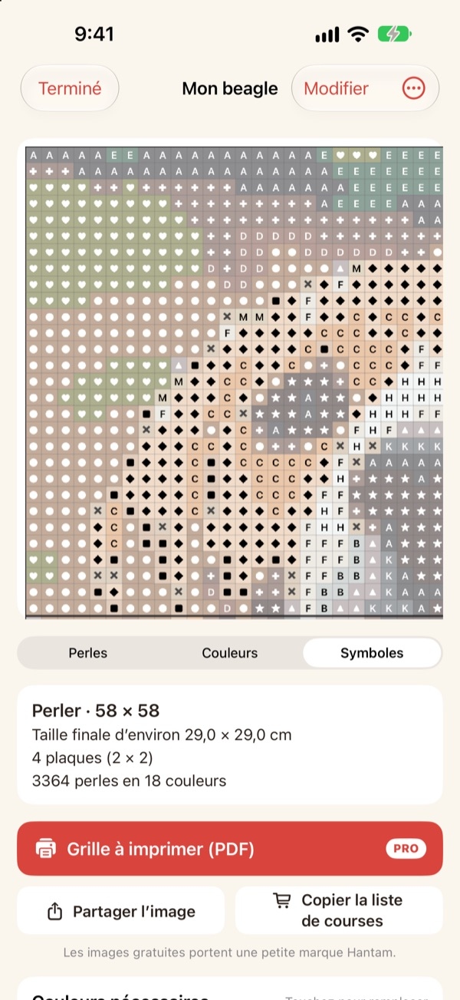
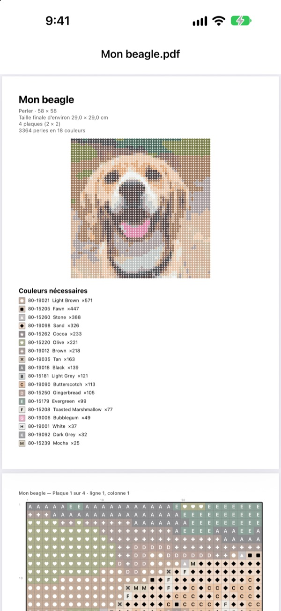

Une photo
devient une grille
Choisissez une photo de votre animal, de vous ou de votre personnage préféré. Hantam en fait une grille de perles à repasser ou de point de croix, dans des couleurs que vous pouvez acheter.
Gratuit pour les grilles d'une plaque. Vos photos restent sur votre iPhone.

Essayez sur une photo
La même correspondance des couleurs que dans l'app, avec le vrai nuancier Perler. Changez la taille et le nombre de couleurs, ou essayez avec votre propre photo.
Faire une grille, c'est facile. Retrouver les vraies couleurs de perles, beaucoup moins.
Pixelisez une photo avec n'importe quel éditeur et vous obtenez des couleurs qui n'existent en aucune perle ni aucun fil. Il faut ensuite deviner de quel pot vient chaque case et compter combien en acheter. Hantam choisit uniquement parmi des couleurs vendues et vous dit exactement combien il en faut.
De vraies couleurs, de vrais numéros
Choisissez des perles Perler, Hama Midi ou Artkal S, ou du fil DMC. Chaque case reçoit une couleur que la marque vend vraiment, avec son numéro.
Vous fixez la taille et le nombre de couleurs. Les grandes grilles sont découpées en plaques de 29 × 29.

Le point de croix aussi
Choisissez le fil DMC et la même photo devient une grille de point de croix. Sélectionnez une toile Aida 11, 14, 16 ou 18 points et Hantam affiche la taille finale et le nombre de points par couleur.

Vous savez quoi acheter
Passez à la grille à symboles pour avancer case par case, avec un trait épais à chaque bord de plaque ou tous les 10 points. Voyez combien de perles il faut par couleur et faites Copier la liste de courses d'un toucher.
Touchez une case pour la modifier, ou remplacez une couleur par une autre partout.

Imprimez et lancez-vous
Avec Pro, exportez une Grille à imprimer (PDF) : d'abord la liste des couleurs, puis les grilles à symboles, plaque par plaque.

Trois étapes jusqu'à la grille
- 1
Choisir une photo
Animaux, visages, logos, personnages : tout fonctionne. Une photo avec un sujet bien net donne le meilleur résultat.
- 2
Choisir perles ou fil
Fixez la marque, la taille et le nombre de couleurs.
- 3
Créer
Suivez la grille à l'écran ou imprimez-la avec Pro.
Matériaux et tailles
- Perler · Hama Midi · Artkal S
- Perles à repasser, plaques de 29 × 29, perle d'environ 5 mm
- DMC
- Fil à broder sur toile Aida 11, 14, 16 ou 18 points
- Gratuit
- Perles jusqu'à 1 plaque (29 cases), fil jusqu'à 40 points sur le plus grand côté
- Pro
- Perles jusqu'à 4 × 4 plaques (116 cases), fil jusqu'à 200 points
- Couleurs
- De 2 à 50 par grille
Perler, Hama, Artkal et DMC sont des marques de leurs propriétaires respectifs. Hantam n'est affilié à aucune d'elles. Les couleurs à l'écran peuvent légèrement différer de la réalité.
Commencez gratuitement. Passez à Pro pour les grandes grilles et l'impression.
Gratuit
- Grilles jusqu'à une plaque ou 40 points
- Toutes les marques : Perler, Hama, Artkal et DMC
- Quantités par couleur, liste de courses et échange de couleurs
- Jusqu'à 3 grilles enregistrées
- Images à partager avec un petit logo Hantam
Hantam Pro
- Grilles PDF à imprimer
- Jusqu'à 4 × 4 plaques ou 200 points
- Grilles enregistrées sans limite
- Images sans logo
- Tous les outils de pixel art
Abonnement mensuel ou annuel, ou achat unique à vie
Vous pouvez aussi offrir Pro à un ami depuis l'app.
Questions fréquentes
Mes photos sont-elles envoyées quelque part ?
Non. Les photos et les grilles sont traitées et enregistrées uniquement sur votre iPhone.
Les couleurs diffèrent un peu de mes perles.
Un écran n'affiche pas les couleurs comme le plastique ou le fil. Touchez une couleur dans la liste pour la remplacer par une teinte plus proche de la même marque.
Quelle taille peut faire une grille ?
En gratuit, une plaque de 29 × 29 ou 40 points sur le plus grand côté. Avec Pro, jusqu'à 4 × 4 plaques (116 perles) ou 200 points.
Quelles photos donnent le meilleur résultat ?
Celles avec un seul sujet et un fond simple. Moins il y a de couleurs, plus la grille est nette : si le résultat paraît chargé, réduisez le nombre de couleurs.
Peut-on encore faire du pixel art ?
Oui. Pixelisation de photos, dessin d'après 110 modèles et animation image par image sont toujours là. Tous les outils de pixel art sont inclus dans Pro.
Comment restaurer mon achat ?
Ouvrez les réglages de l'app et touchez Restaurer les achats. Utilisez le même compte Apple que pour l'achat de Pro.
Comment résilier l'abonnement ?
Allez dans Réglages de l'iPhone › votre nom › Abonnements et choisissez Hantam. L'accès à vie est un paiement unique, jamais renouvelé.
Comment signaler un bug ou proposer une idée ?
Le plus rapide est d'envoyer un avis depuis les réglages de l'app. Vous pouvez aussi écrire à l'adresse ci-dessous ou envoyer un message sur Instagram (@lee25_ios).
Questions, bugs et idées sont les bienvenus à leeo@kakao.com.